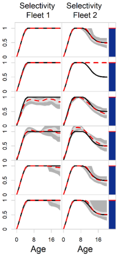

Towards best practice for specifying selectivity in age-structured integrated stock assessments
Project summary:
Specification of how selectivity (the combination of availability and vulnerability) is modelled in integrated stock assessments is key to avoiding bias in estimates of quantities of management interest. Many “rules of thumb” are common in the community but these have yet to be rigorously tested. This paper uses simulation to compare 12 approaches for specifying selectivity in an age-structured integrated stock assessment, including parametric and non-parametric approaches. The operating model represents a two-fishery case where selectivity for one or both fisheries can be dome-shaped and/or time-varying. The results suggest that using AIC to select among selectivity forms is not robust, including when model misspecification is absent, even though the use of model selection criteria such as AIC is common when conducting stock assessments. The use of double normal selectivity was found to be most robust to uncertainty in the true form of selectivity. Estimation of time-variation in selectivity did not lead to appreciable improvements in performance when the true time-variation was random. The double normal form performed poorly if M was estimated along with the other model parameters. Similarly, use of flexible parametric methods, such as splines, performed adequately with informative data, but poorly when the catch series exhibited low contrast and age-composition data were not available from the start of the fishery. This suggests that the best practices for selectivity will depend on knowledge of the likely information content of the data.
Status: Published
GitHub: Not currently available.
Keywords: best practice, non-parametric selectivity, simulation, stock assessment, Stock Synthesis
Key definitions:
- Selectivity: length- or age-based probabilities used to link observed composition data to model predictions about population abundance-at-age/-size.
- Availability: the probability that a fish of a specific age or size is in the same vicinity at the same time as fishing gear deployment
- Contact (or gear) selectivity: the relative probability that a fish of a specific age or size is caught given it is available to the gear
- Statistical methods for estimating selectivity:
- Parametric models: estimate selectivity using a range of parameters, dependent on the complexity of the population dynamics model
- Flexible parametric models: (e.g., splines) estimate selectivity using an informative and explicit prior function that can be updated by the available data when predicting future observations
- Non-parametric models: estimate selectivity by age and penalize large fluctuations in selectivity between ages
